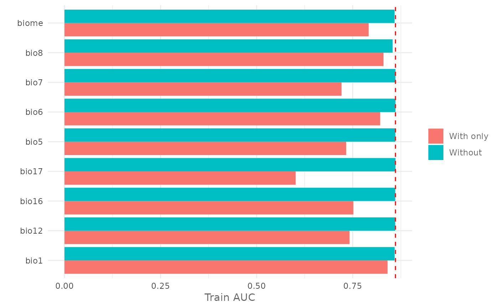
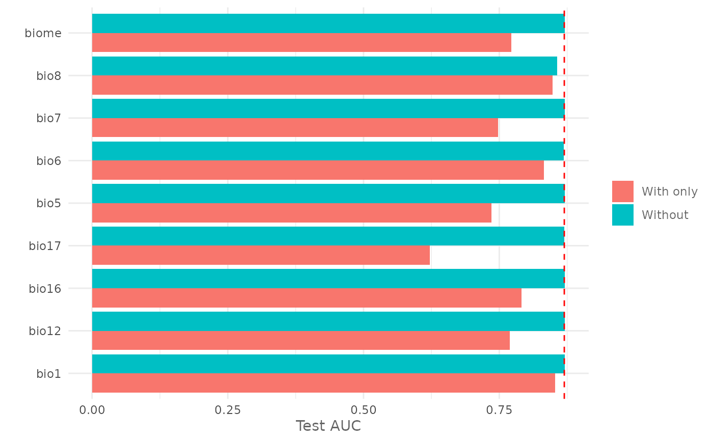

Plot the Jackknife Test for variable importance.
Usage
plotJk(jk, type = c("train", "test"), ref = NULL)Arguments
- jk
data.frame with the output of the doJk function.
- type
character, "train" or "test" to plot the result of the test on the train or testing dataset.
- ref
numeric. The value of the chosen metric for the model trained using all the variables. If provided it plots a vertical line showing the reference value.
Value
A ggplot object.
Examples
# Acquire environmental variables
files <- list.files(path = file.path(system.file(package = "dismo"), "ex"),
pattern = "grd",
full.names = TRUE)
predictors <- terra::rast(files)
# Prepare presence and background locations
p_coords <- virtualSp$presence
bg_coords <- virtualSp$background
# Create SWD object
data <- prepareSWD(species = "Virtual species",
p = p_coords,
a = bg_coords,
env = predictors,
categorical = "biome")
#> ℹ Extracting predictor information for presence locations
#> ✔ Extracting predictor information for presence locations [22ms]
#>
#> ℹ Extracting predictor information for absence/background locations
#> ✔ Extracting predictor information for absence/background locations [48ms]
#>
# Split presence locations in training (80%) and testing (20%) datasets
datasets <- trainValTest(data,
test = 0.2,
only_presence = TRUE)
train <- datasets[[1]]
test <- datasets[[2]]
# Train a model
model <- train(method = "Maxnet",
data = train,
fc = "lq")
# Execute the Jackknife test for all the environmental variables using the
# metric AUC
jk <- doJk(model,
metric = "auc",
test = test)
#> Jk Test ■■■■■■■■■ 28% | ETA: 3s - 00:00:1.1
#> Jk Test ■■■■■■■■■■■■■■■■■■■■■■■■■■■■■■■ 100% | ETA: 0s - 00:00:3.7
#>
# Plot Jackknife test result for training
plotJk(jk,
type = "train",
ref = auc(model))

#' # Plot Jackknife test result for testing
plotJk(jk,
type = "test",
ref = auc(model, test = test))
